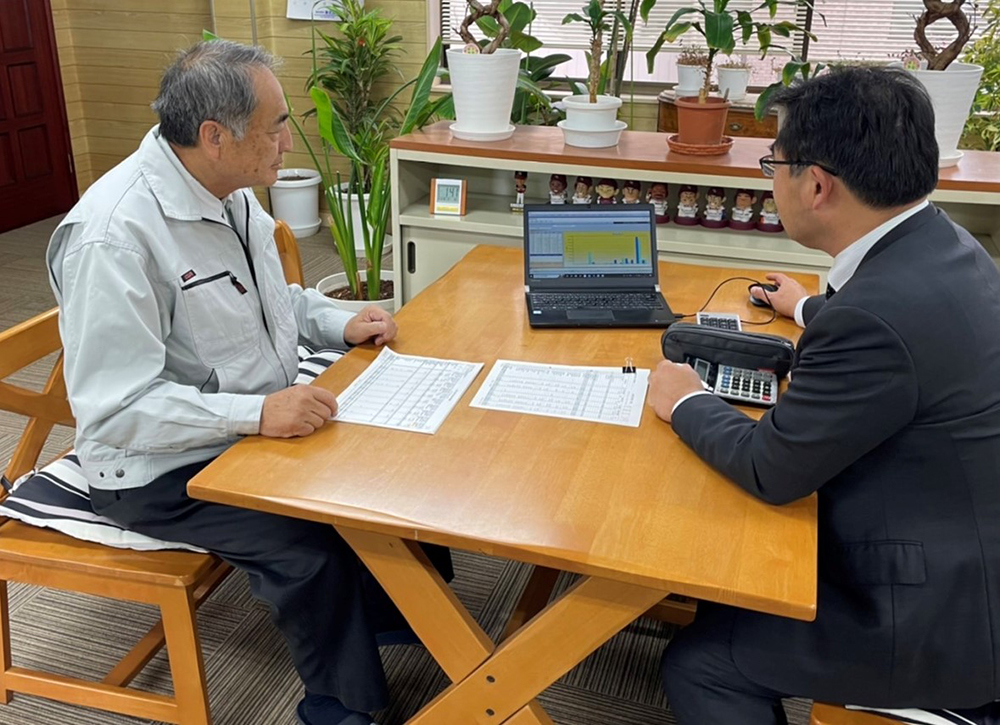
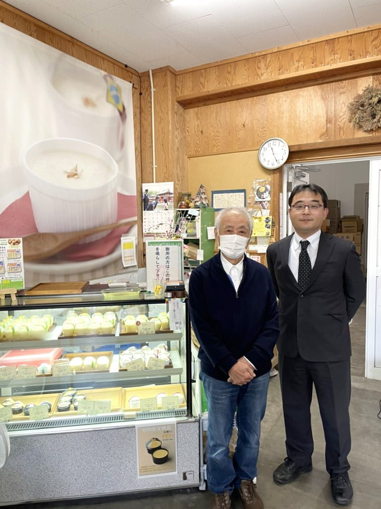
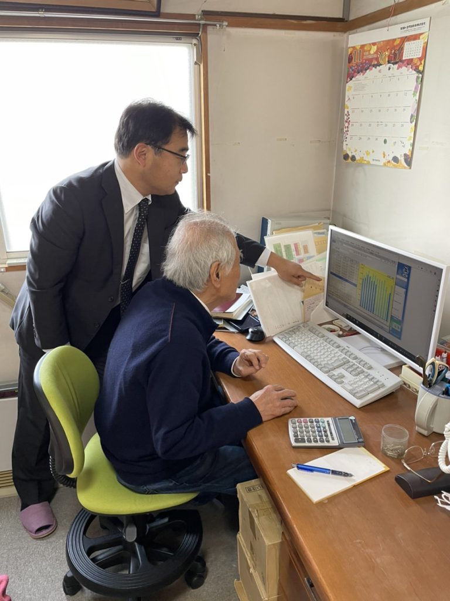
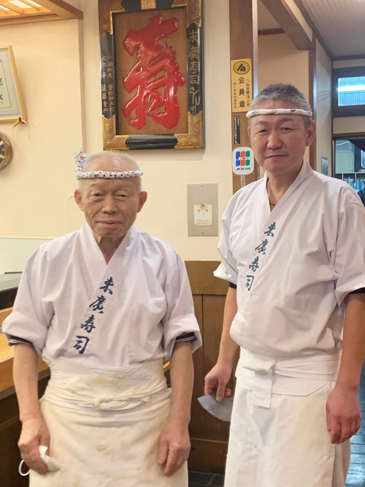
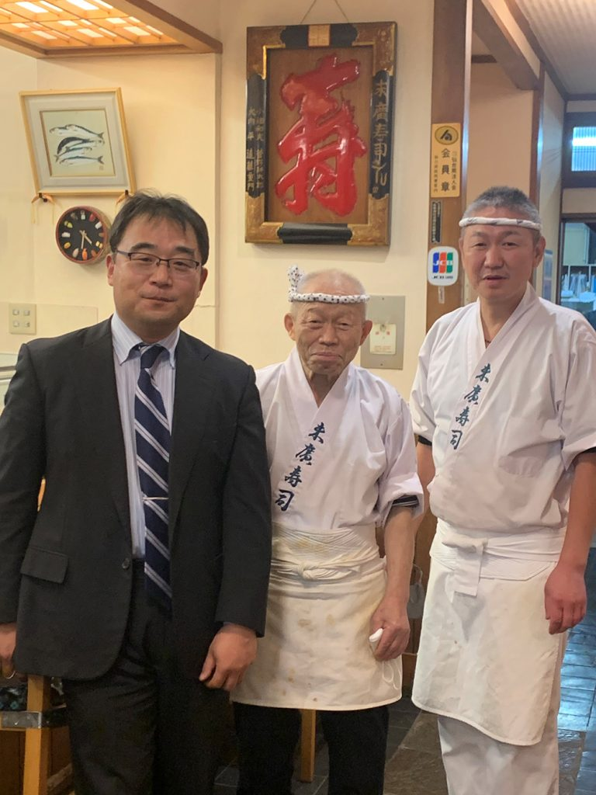
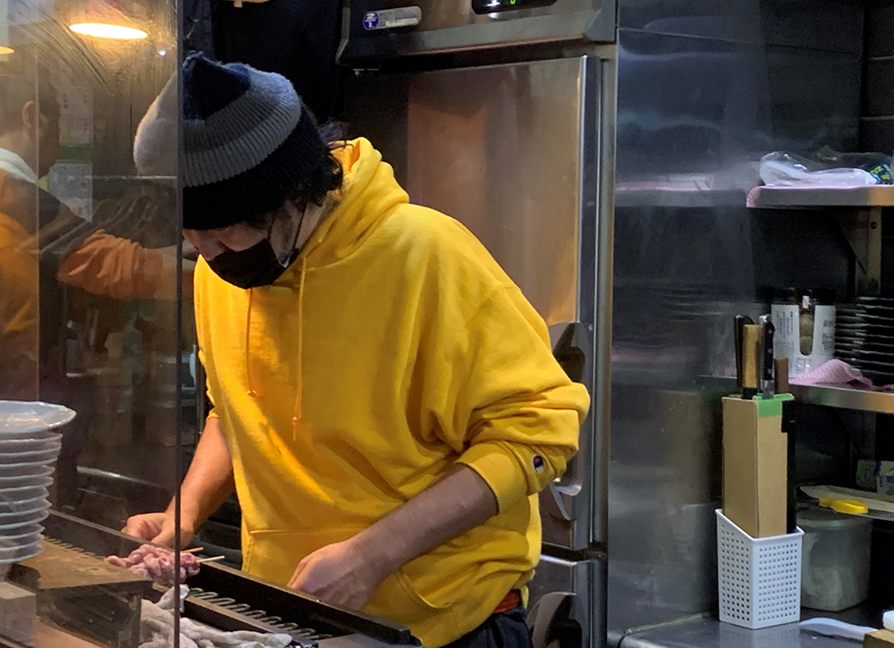
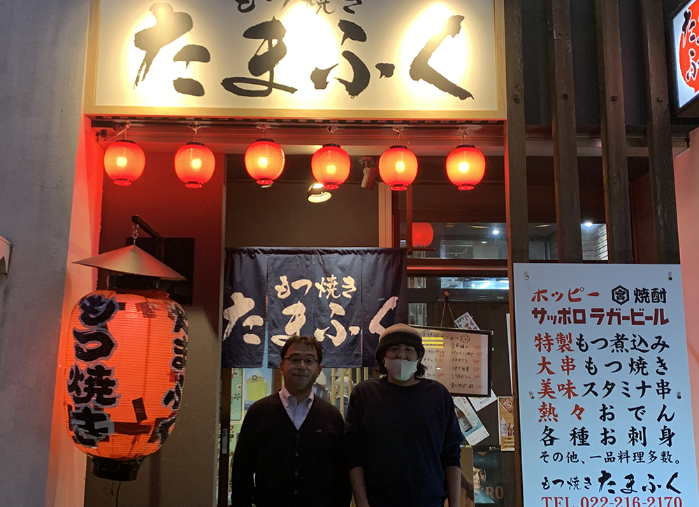
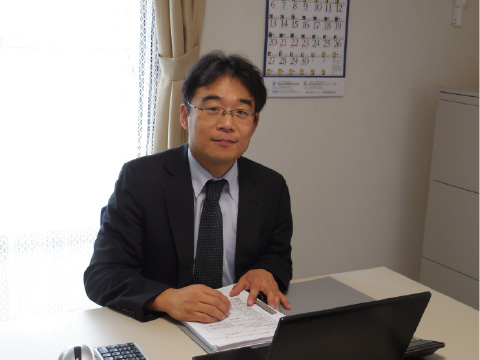

大切なご家族が旅立った時、大きな悲しみの中でも様々な手続きをしなければなりません。多くの方が初めて経験する「相続」に不安を感じることでしょう。そんな時に...
当事務所は、これらを大事にしています。
最近、お客様から
「父が亡くなったとき○○しておけばよかったんでしょうか？」
「家を建てるとき○○しておけばよかったんでしょうか？」
など、過去の判断についてのご質問を受けることが多くなりました。
過去の判断は、間違いではありませんが、もしもう少し早くご縁があったなら、こんな方法もありますよとお伝えできたのにと残念に思うことがあるのも事実です。
自分がなくなったらたくさん税金がかかるのか...？
今からできる対策はあるのか？
ただ、漠然と残される家族が心配だ...など、少しでも不安に思っていることがあれば、お気軽にご相談ください。
相続税がどのくらいかかるのか不安...いつでもご相談ください。
相続税・贈与税がよく分からない、分かりづらいなどの声が聞かれます。当事務所では相続に関して関心がある方の相談はいつでもお受けしますし、希望があれば相続税の試算も致します。皆さんに満足していただけるよう、難しい用語や解釈も分かりやすく丁寧に説明することを心がけておりますので、気軽に安心して相談してください。
今できることはないか...相続税対策をご提案致します。
生前対策は今すぐ相続税を払う必要がないので軽視しがちです。将来のために節税を行うことで一家の財産を多く残し、家族円満にあなたの財産を守ることができるかもしれません。将来生ずるであろう相続税を節税する提案を、ご相談者に合わせて検討致します。
相続の際にもめるかもしれない...弁護士や司法書士と提携しています。
相続は、生前対策においても、相続手続きにおいても、弁護士と税理士が同一の目的のもと、連携して進めていくことがとても重要です。当事務所では必要に応じて相談業務を行える弁護士や司法書士と連携して相続手続きを進めてまいります。
不動産収入の所得税確定申告が不安...当事務所でお手伝いします。
不動産所得のお手伝いから譲渡に関連した確定申告まで皆様のお手伝いを致します。不動産所得は手間暇かかります。ゼロからでもお手伝いいたしますし、「集計は自分でやるから申告のみお願いしたい。」など様々なお客様のニーズに対応していきます。
譲渡所得では、所得税措置法など特例をフルに活用させ、できる限りお客様の税金を一番安くなる手段をご提案します。
私たちにお任せいただければ不動産所得から、譲渡所得、不動産オーナーの相続対策に至るまで、トータルでお客様の不動産税務をサポートさせていただきます。

︎東北造園様は、松島の円通院の庭園や仙台国際センター周辺,みちのく湖畔公園などの我々が日頃利用している施設等の造園工事を手掛けている会社です。


non-GMO(非遺伝子組換え）の飼料を使用するなど品質にこだわった鶏卵の生産販売とその鶏卵を原料にしたプリンやマヨネーズの製造販売している会社です。その品質の高さからあいコープなどでも販売されています。
人によってはＴＫＣは税務署の回し者と云いますが、私は利益を出して払うべき税金は払うのが健全な事業の発展につながると考えています。ＴＫＣの方針は正しいと思いますし、大原さんの人柄にも信頼がおけるのでお願いしています。これからももっともっと発展し、顧問先を指導してください。
― ︎花兄園 大須賀木 社長


名取市で親子2代で伝統の味を守る名店です。
うちの売りは、新鮮な魚介。39年前の創業当初から毎日自分の足で、仕入れて魚介を出しております。だから新鮮さに関しては他のお店には決して負けません。また他のお寿司やと比べて、定食などのメニューが豊富で、こちらも新鮮なネタをふんだんに使っているので、ぜひ一度ご堪能頂ければと思います。
― ︎末広寿司分店 佐藤 貞 会長 佐藤 克治 社長


たまふく様は、旧店舗が周辺の再開発に伴い退店を余儀なくされました。コロナ禍という厳しい中で晩翠通り沿いのドン・キホーテ向かいへ移転し再出発。こだわりのもつ焼きやもつ煮を待ち望んでいた常連客で再び賑わっています。
― もつ焼きたまふく 横田 高志 代表

お客様の近くでもっと話を聞いたり一緒に悩んだりできる税理士を目指したいと思い、この事務所を開業しました。皆様に信頼される仕事をし、喜んでいただける様、全力でサポートさせていただきます。
毎月の業績報告、決算が近づくと納税予測をしてもらっています。税務以外でも様々な相談にのってもらっています。申し訳ないと思いながら、すぐ電話して相談しています。
― ︎東北造園 淺田 通明 社長